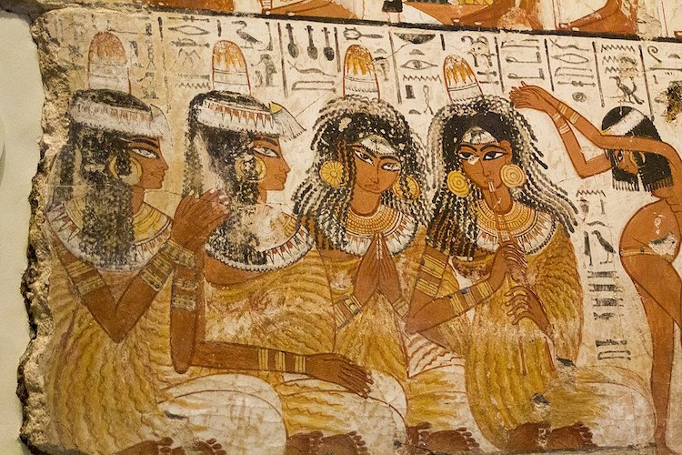

Sprâncene, gene, buze și priviri redefinite prin tehnici de micropigmentare și dermopigmentare adaptate fiecărui chip — într-un spațiu steril, cu materiale de unică folosință și consultanță personalizată, pentru femei și bărbați deopotrivă.

Dorința de a accentua trăsăturile feței prin pigmentare nu este nouă. Cele mai vechi urme cunoscute aparțin lui Ötzi, mumia din gheață descoperită în Alpi în 1991 și veche de peste 5.000 de ani, care purta pe corp tatuaje realizate probabil cu rol terapeutic. În Egiptul Antic, începând din jurul anului 3000 î.Hr., femeile și bărbații foloseau tehnica „stab and poke” pentru a contura sprâncenele și pentru a aplica pigment pe pleoape și buze, ca semn al statutului social.
La începutul secolului XX, tatuajul cosmetic a evoluat spre o disciplină de sine stătătoare — artistul britanic George Burchett este creditat cu una dintre primele tehnici de pigmentare a buzelor, strămoșul machiajului permanent de astăzi. În anii 1970-1980, sprâncenele erau conturate cu aparatele clasice de tatuaj, o metodă eficientă, dar adesea prea densă și nenaturală.
Tehnologia s-a rafinat treptat: au apărut ace fine, formate din 8-12 pini, care depun pigmentul la doar 0,2-0,3 mm sub piele — suficient de superficial pentru un rezultat estompat, natural, dar durabil. Așa a apărut micropigmentarea modernă, iar în ultimele două decenii tehnicile fir cu fir și microblading au adus un nivel de precizie și naturalețe fără precedent. Astăzi, dermopigmentarea nu mai este un simplu substitut al machiajului, ci o formă de îngrijire personalizată a trăsăturilor, accesibilă deopotrivă femeilor și bărbaților.
Surse: cercetări arheologice privind mumia Ötzi și tatuajele din Egiptul Antic; istoricul machiajului permanent și contribuția lui George Burchett; evoluția tehnicilor de micropigmentare din a doua jumătate a secolului XX.
Fiecare procedură este precedată de o consultație în care stabilim împreună forma, nuanța și tehnica potrivită trăsăturilor tale.
Micropigmentare fir cu fir, powder, hybrid sau microblading — pentru sprâncene dese, simetrice și armonioase cu chipul tău.
de la 900 Lei Vezi tehnicile →Extensii de gene fir cu fir, în volum de la 1D la 6D, pentru o privire intensă și naturală, adaptată formei ochilor tăi.
de la 220 Lei Vezi detalii →Conturare și pigmentare naturală a buzelor, pentru un contur definit și o culoare uniformă, zi de zi.
de la 800 Lei Vezi detalii →Linie fină sau intensă la baza genelor, pentru o privire definită non-stop, fără machiaj zilnic.
de la 1000 Lei Vezi detalii →Stabilim împreună forma, nuanța și tehnica potrivită înainte de orice procedură.
Ace, mănuși și consumabile desigilate în fața ta, pentru siguranța ta completă.
Nuanțe alese în funcție de ten, culoarea părului și a ochilor, pentru un rezultat natural.
Primești instrucțiuni clare și suport pe tot parcursul vindecării, plus retuș inclus.
Fotografiile before/after vor fi adăugate aici pe măsură ce sunt disponibile.
Rezervă o consultație gratuită și află tehnica potrivită pentru tine.